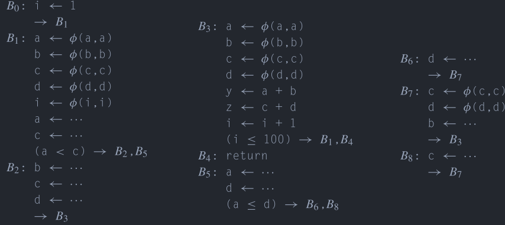
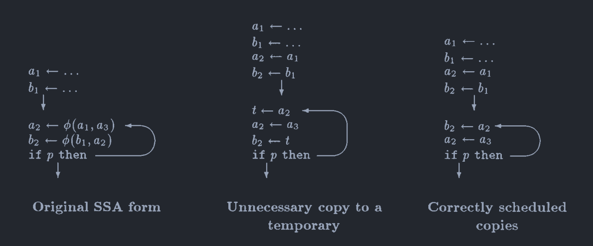
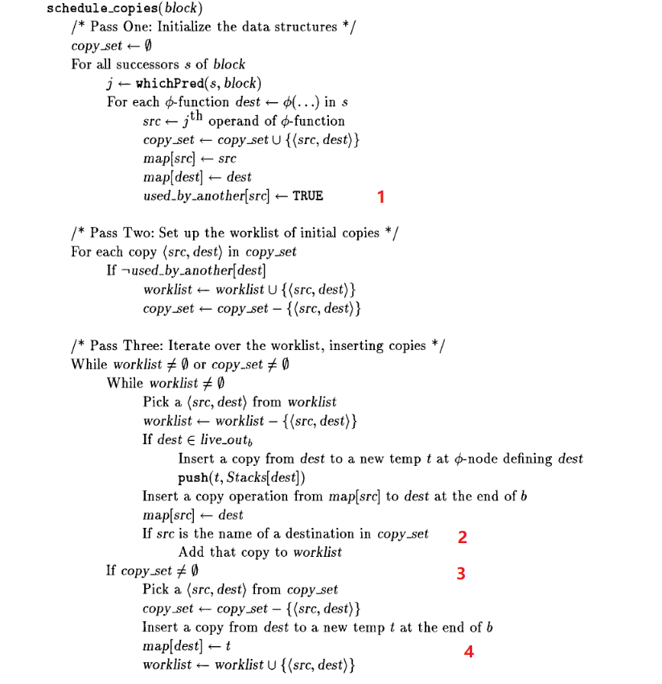
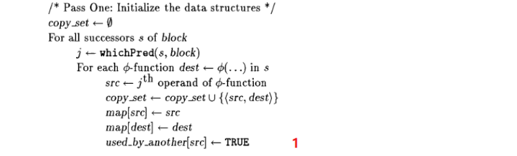
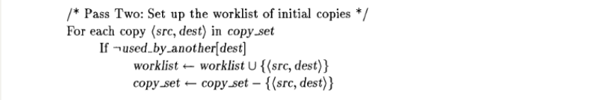

静态单赋值形式（1）
视频地址：Bilibili
静态单赋值形式（Static Single Assignment Form, SSA Form），是一种IR的形式，在《编译器设计（第2版）》[1]中有比较好的描述，在《Static Single Assignment Book》[4]中对应用和扩展SSA有更加多的有关内容。
虽然名字很长一串，但是实际上的意思就是说每个变量只能被赋值一次，每次赋值需要产生一个新的名字，也就是说下面的代码Code 1为了满足这个要求并且保持原有的语义就需要修改为Code 2的样子。
这样一来就相当于给了每个赋值一个名字，这样
那么如果是类似于Code 3(a)这样的CFG该怎么办呢？在对

那么在

加入了
当然，事实上在计算机中找不到可以对应
上面的内容可以说明“静态单赋值形式”中单赋值的含义，那么静态呢？静态和动态相对，比如在下面的代码Code 5中，对a是静态单赋值的，在IR代码中对a的赋值只有一次，但是不是动态的，这是一个循环在，实际执行中a会被赋值多次。
Label:a <- 10jump Label
构建
普通的IR转化为SSA形式的IR可以分为两步，首先在必要的位置插入
插入
那么如何确定需要在哪些基本块的开始处插入哪些
如果基本块
不过事情不完全如此，有的时候
重命名
在插入了

这个算法的大致过程是在支配树上做先序遍历，然后对每个基本块内的指令进行遍历，如果出现了对一个变量
之所以是对支配树进行先序遍历是因为如果存在x <- v + 2的指令来说其中的
例子
例子都来自于[1]，这里差不多就照着念了。

(a)每个基本块的代码 (b)控制流图 (c)支配边界 (d)变量出现的基本块 (e)支配树


摧毁
在SSA Form下进行了优化之后需要将
一个
那么一个直接的想法就是将这些复制语句直接放在相应的前驱就可以了，如Fig 4(b)所示，将对应的复制语句放入对应的前驱中，这里面产生了


这些自动生成的复制语句可以在寄存器分配阶段进行消除，也可以使用其他优化进行消除，具体的可以看其他视频。
关键边拆分
在对

那么如何对这样的情况进行处理呢？那么就需要将Fig 5中的关键边进行拆分，具体就是在黄边中插入一个新的基本块，然后将复制语句放在新加入的基本块中，这个过程的结果如Fig 6。

不过不是所有对关键边的拆分都是必要的，对关键边的拆分可能会产生大量只有几条指令的基本块而且增加了跳转语句的数量，有的时候多执行一条指令并不会引起任何的问题，而有的时候则不行，下面有对原因进行说明。
这之前补充一下，大多数情况下不进行关键边分割其实不会有任何问题，因为插入的复制的名字是唯一的，所以不会对其他名字的变量产生影响。
复制丢失问题（Lost-Copy Problem）

除了处理关键边的问题之外，还有其他的问题需要进行处理，比如在Fig 7中的情况，在Fig 7(b)中展现的是进行了复制折叠之后的代码，不进行复制折叠的情况类似于Fig 8。
在Fig 7(d)展示了使用关键边拆分来解决问题，但是这样会增加不必要的跳转，在循环中进行这样的操作对于循环的性能来说有损害。
这之类的问题就在于，按照优化前的方式来说，如果出现了
进一步观察可以发现，在去除了
交换问题（Swap Problem）
这种问题会出现在类似于下面Fig 8中，在将

不过有时候多余的移动指令并不是必要的，只需要调整一下插入的移动指令的顺序就行了如Fig 9。

放在一起
《Engineering a Compiler》中虽然虽然描述了这两个问题，但是没有给出解决的方法，特别是一个统一的方法对问题进行解决，好在作者的论文[6]中给出了解决的方法。这里来介绍一下解决方法，这个方法不会进行关键边分割，见Fig 10。
算法的主循环是对支配树进行先序遍历，这一点和进行重命名的时候是一样的，因为处理上面的两个问题都需要引入临时变量，同时修改后续的引用，所以使用了和重命名的时候相似的算法，每个前驱处理后继结点的


Fig 10(a)是主循环，而Fig 10(b)则是处理每一个基本块的具体步骤，主循环不难理解，主要来看看如何对每个基本块进行处理。schedule_copies的行为是两个链表驱动的，被分为3个步骤。
两个链表分别是worklist、copy_set，其中copy_set存放了将被插入的copy指令，其中的指令还需要进行一些处理，然后放入到worklist中，比如在copy_set中，可能存在着一些循环的依赖，这个时候就需要进行处理了，到达了pass three的第二部分，也就是
第一个pass是对后继中的

第二个pass是对copy_set进行了遍历，如果copy语句的dest并没有被依赖，那么就可以移入到work_list中。

第三个pass对两个链表都进行了遍历，首先遍历的是work_list，按照先进先出顺序取出copy语句进行插入，如果此copy语句的dest是出口活跃的，那么，先插入移动到临时变量的copy语句。看标记2，如果此时将一个copy语句（

在最后将所有的copy语句全部插入之后，就可以安全地删除掉所有的
通过
在Sreedhar et al.[5]的文章中提出了phi congruence class的概念，可以利用其性质来消除
引用
[1] Engineering a Compiler, K. Cooper
[2] S. Hack, D. Grund和G. Goos, 《Register Allocation for Programs in SSA-Form》, 收入 Compiler Construction, Berlin, Heidelberg, 2006, 页 247–262. doi: 10.1007/11688839_20.
[3] C. Wimmer和M. Franz, 《Linear scan register allocation on SSA form》, 收入 Proceedings of the 8th annual IEEE/ ACM international symposium on Code generation and optimization - CGO ’10, Toronto, Ontario, Canada, 2010, 页 170. doi: 10.1145/1772954.1772979.
[4] Static Single Assignment Book
[5] V. C. Sreedhar, R. D.-C. Ju, D. M. Gillies和V. Santhanam, 《Translating Out of Static Single Assignment Form》, 收入 Static Analysis, 卷 1694, A. Cortesi和G. Filé, 编 Berlin, Heidelberg: Springer Berlin Heidelberg, 1999, 页 194–210. doi: 10.1007/3-540-48294-6_13.
[6] P. Briggs, K. D. Cooper, T. J. Harvey和L. T. Simpson, 《Practical improvements to the construction and destruction of static single assignment form》, Softw: Pract. Exper., 卷 28, 期 8, 页 859–881, 7月 1998, doi: 10.1002/(SICI)1097-024X(19980710)28:8<859::AID-SPE188>3.0.CO;2-8.